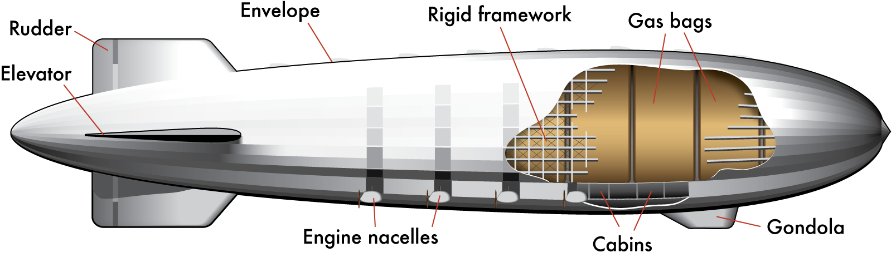

The structure of a Rigid Airship is made of metal beams and poles that form the shape of the aircraft together. As per their name, Rigid Aircrafts are much more geometric in their shape than blimps because of this metal frame. The entire structure is enabled to “float” or fly using large bags of a gas that were known as gas cells. These gas cells would fill with mainly substances that are considered less dense than the surrounding air, such as Hydrogen or Helium, which allowed it to be positively buoyant. The controlled gas cells and rigid structure allowed the volume of the Hindenburg to be fixed and controlled despite differing temperatures and altitudes, as was the same for all other Dirigible Airships. The Hindenburg was considered one of the largest Zeppelins of the day, and contained 16 of these gas chambers or cells within its structure. While most Zeppelins including the Hindenburg were designed to work on Helium gas, the United States, who had a monopoly on the non-flammable gas, had set a moratorium on the trade of Helium to other nations. So the more abundant, and more flammable Hydrogen would do. The Hindenburg was unique in its design in that it could hold twice the volume of gas than the standard for other airships at the time because of its wider gas cells. The introduction of gas cells in airships allowed for the volume of the gas to stay controlled and constant, so the pressure from the higher atmosphere and the temperature from the altitude would not affect the amount of lifting gas. To be specific, the Hindenburg contained 211,890,000 Liters of Hydrogen gas in its chambers.
Using the gas laws, we can easily calculate the number of moles of Hydrogen gas in the Hindenburg gas cells. Normally, one might assume that we could use Avogadro’s Law, which states that the mole to volume ratio at STP for every gas is 24 L / 1 mole, to solve this problem because we are given the volume of Hydrogen gas. However, it is important to remember that the Hindenburg was most likely not flying while the weather was at Standard Temperature and Pressure, rendering us unable to calculate the molar quantity of Hydrogen gas using Avogadro’s Law. Not to fear! We can always use the Ideal Gas Law, which allows for us to enter the proper quantities for temperature, pressure, and volume as needed. The equation is set up as follows with P being pressure, V, being volume, T, being temperature, R, being our universal gas constant (.0821), and n, being our molar quantity:
Now, we need to set up the equation to solve for n, or moles of Hydrogen gas (H2). We do so as follows:
For the purposes of this problem, we will assume that the internal and external pressure were both about 1.1 atm or 110 kPa, and use the quantity of .0821 ((Liters x atm) / (Kelvin x mole)) for R. We know the volume is 2.1189 x 108, and given that the temperature in Berlin that day was, say 6.4 degrees Celsius, we can calculate T, to equal about 279.4 Kelvin. Your equation should look as follows:
Plug this into a calculator and you answer should read to be about 10,160,933 moles of Hydrogen Gas, or with sig figs, about 1.0 x 107! And remember that because Helium is twice as heavy as Hydrogen, the Hindenburg was able to carry twice the amount of storage, rather than if it used Helium.
Now that we have the mole quantity of Hydrogen gas, we can use it to figure out real life situations with the Hindenburg and the Ideal Gas Law. The Hindenburg took many trips to Brazil over its lifespan, and has it neared the equator, the temperature would increase and the Hindenburg would get hotter, and hotter. On one trip however, the temperature in Rio de Janeiro that January (their Summer) was beyond what many Europeans had ever experienced at 38 degrees Celsius! To understand how this temperature affected the Zeppelin, we must once again turn to the ideal gas law. We know that the volume will stay the same because it is controlled by the operators of the ship and constantly monitored, which means that the volume was at full capacity at 211,890,000 Liters of Hydrogen Gas, just as we found previously along with the moles of gas (n). The value for temperature is 38 degrees Celsius, or 311 Kelvin, and the value of R stays the same as previously as it is the universal gas constant of .0821. We cannot assume that the pressure stays the same as in the last problem because the temperature is changing drastically, which will cause changes within the pressure as well. So, because we are trying to find the pressure of the gas inside the Zeppelin, we need to set up our Ideal Gas Law equation to solve for P, or pressure:
We plug in each of our values appropriately:
And receive an answer around 1.2 atm:
This may not seem like a dramatic increase, but put in terms of kiloPascals, the pressure increased by about 10 whole units (from about 110 kPa, to about 120 kPa when taking into account significant figures). Here, we can see how the Gas Laws, more specifically the Ideal Gas Law, proves the correlation between temperature and pressure. When the temperature increases, the particles of gas will tend to move faster, striking the walls of their container more often, thus increasing the pressure, explaining as to why the pressure of the Hydrogen gas would naturally increase as we move into a different climate zone that is hotter. And normally, in something such as a balloon, when the pressure or temperature changes, the volume would change as well as Boyle’s Law states that it is inversely proportional to pressure. However, the gas cells in the Hindenburg once again, maintain the constant volume of Hydrogen gas. If a system, such as this one, changes the environment (temperature or pressure) but maintains a constant volume, it is known as a isochoric process.